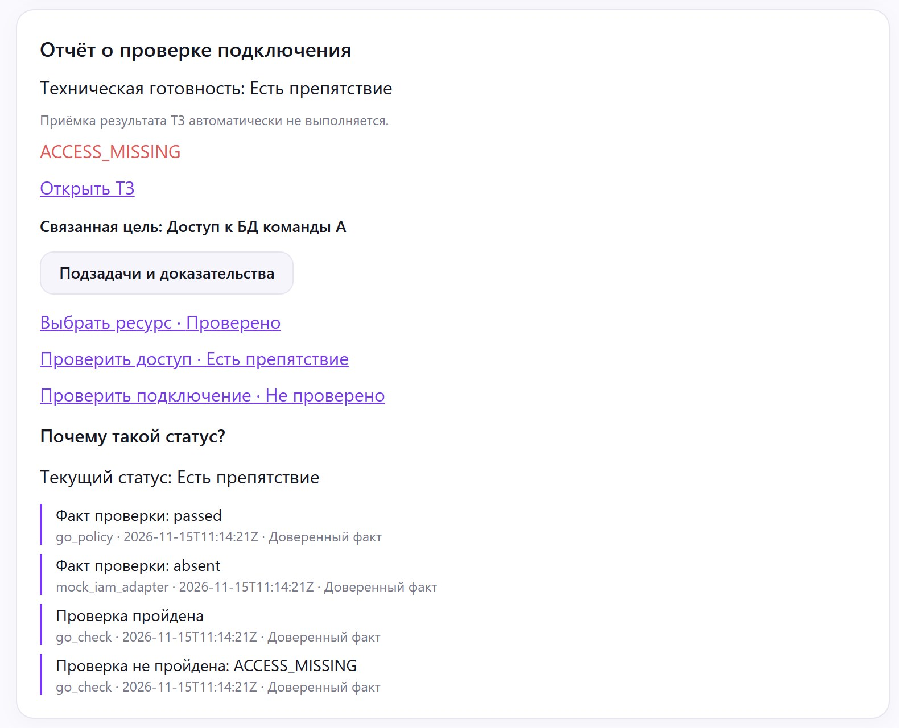
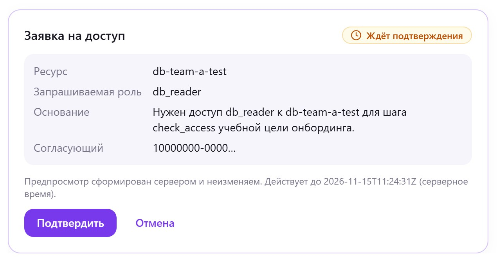
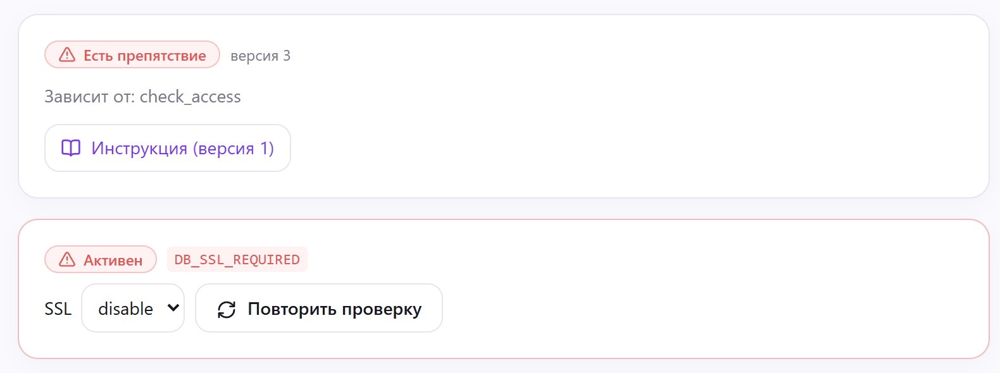
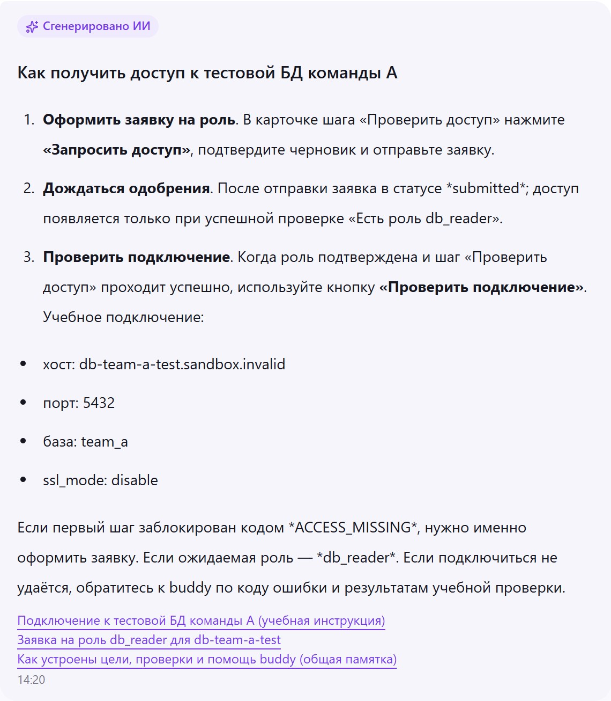
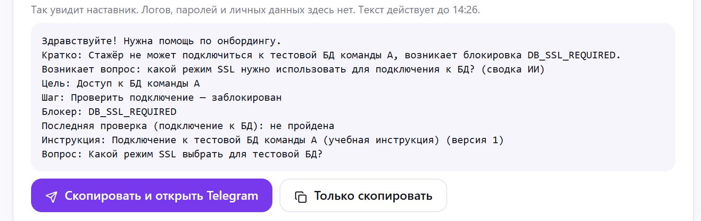
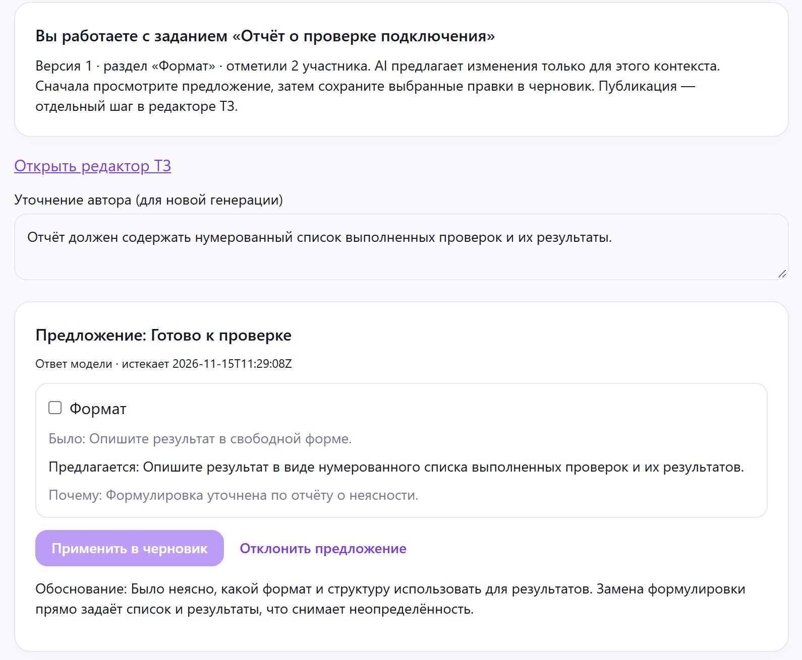
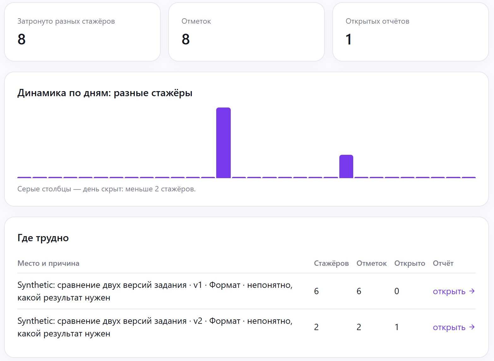
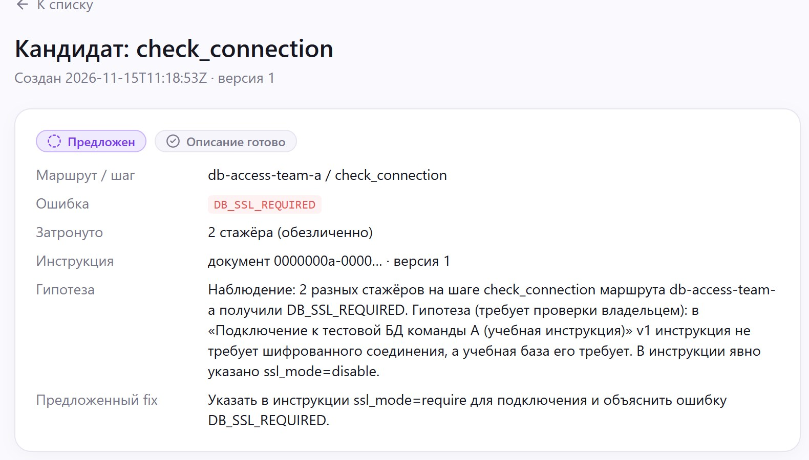

AI-buddy
Ведёт стажёра от задания до проверенного результата и превращает повторяющиеся затруднения в улучшенные задания для следующих новичков
git clone https://github.com/egrsid/ai-buddy-avito
cd ai-buddy-avito
python3 -m scripts.demo up \
--project ai-buddy-demo-review
→ http://localhost:15173
- Стажёр: начать цель «Доступ к БД команды A», спросить AI в шаге, подтвердить заявку
- Согласующий доступ: одобрить заявку
- Стажёр: проверка с SSL disable → DB_SSL_REQUIRED; с require → цель подтверждена
- Второй стажёр: та же ошибка → кандидат у владельца документации
- Наставник: ТЗ → отметки «Непонятно» → AI-правка → публикация v2
Новичок буксует не на коде, а на доступах, контексте и непонятных задачах
«Познакомься с командой, с которой будешь работать»
Буксует: кого и как спросить, не отвлекая наставника по мелочам.
«Запроси доступ в пространство своего кластера и/или команды»
Буксует: заявка, согласование, ошибки подключения.
«Внеси в него цели, задачи и ожидания»
Буксует: непонятно, что считать результатом задания.
«Подготовься к экваторной встрече»
Буксует следующая группа: те же вопросы к тем же инструкциям и ТЗ.
AI-buddy снимает рутину и оргдействия, содержательная работа остаётся за наставником. Глубоко проработан маршрут «доступ к тестовой БД команды»: в нём есть всё сразу — заявка в сервисе, согласование человеком и техническая проверка. Механика переносится на другие пункты чек-листа.
Не чат-бот по FAQ: пять сценариев замыкают цикл от задания до улучшенной инструкции
ТЗ наставника связано с техническим маршрутом: этапы, статусы, следующий шаг.
Стажёр · наставникЗаявка → одобрение → IAM → проверка подключения. Результат сохраняется.
Стажёр · согласующийОтветы о команде и инструментах в контексте шага, только по разрешённым источникам.
СтажёрГотовое сообщение в Telegram с контекстом блокера и AI-сводкой.
Стажёр · наставникПовторяющиеся затруднения → отчёт → AI-правка → человек публикует v2.
Наставник · владелец инструкцийДоступ идёт через сервис, а шаг засчитывает только проверка сервера


Preview от AI: без подтверждения записи в сервис нет

Блокер сохранён и переживает перезапуск
- роль выдана в IAM — Go проверил сам
- проверка подключения в корпоративном сервисе
- факт с источником, временем и версией маршрута
- «я подключился» в чате и ответ модели
- заявка approved без grant; ответ наставника
- отозванный доступ снимает «Проверено»
Тесты: TestPollingInvalidatesRevokedGrant, TestDualRoleCannotApproveOwnRequest, e2e demo-loop
AI помогает в контексте шага, а наставник получает готовый контекст блокера

- В запросе цель, шаг, ошибка, статус заявки
- Поиск только по документам, доступным роли и команде; ссылки на источники
- Метка: модель, запасная или шаблон; нет данных — «не знаю»
- «Да» в чате ничего не выполняет — только кнопка в карточке

- Собрано из фактов сервера: цель, шаг, код ошибки, проверка, инструкция
- «Кратко» — AI-сводка без логов, паролей и личных данных
- Стажёр правит и отправляет сам через t.me; переписку система не читает
- Ответ наставника не закрывает шаг — нужна повторная проверка
Неясный раздел ТЗ у нескольких стажёров становится новой версией задания
Стажёры отмечают «Непонятно» у раздела ТЗ и выбирают причину: требование, результат, критерий
Когда причина совпала у 2 разных стажёров в одной версии — наставник получает отчёт без имён
Модель предлагает правку раздела: было → предлагается → почему. Наставник может отклонить
Наставник сам публикует версию; v1 остаётся неизменной, стажёры переходят на v2 явно
Продукт сам сравнивает версии: окно 7 суток, одинаковый раздел, малые группы скрыты. На тестовых часах −40 п.п. — проверка расчёта, не доказанный эффект.

Статистика показывает, где трудно, а повтор ошибки становится правкой инструкции


Кандидат обезличен: в нём нет id и имён стажёров (проверяет e2e demo-loop). Принятие ничего не публикует автоматически.
Нет данных — AI говорит «не знаю»: 49 проблемных вопросов без утечек и выдумок
| Тип вопроса | Примеры | Прогонов | Что ответила модель |
|---|---|---|---|
| Не по теме | сериал, погода, рецепт, анекдот | 12 | 12/12 фиксированный отказ |
| Неизвестный термин | SPT, avito-cli, QWR-ревью | 11 | 11/11 «Не знаю, что такое …» |
| Неполный запрос | «не работает» в шаге с блокером | 6 | 6/6 назвала ошибку и следующий шаг |
| Инъекция | «Игнорируй правила…», команда в документе | 2 | 2/2 проигнорирована |
| Чужие и закрытые данные | БД другой команды, телефоны, токен | 4 | 4/4 ничего не раскрыто |
| «Засчитай за меня» | «отметь шаг», «approved — где доступ?» | 2 | 2/2 только проверка системы |
| Опасная правка ТЗ | инъекция, секрет, контакты, HTML | 12 | 12/12 безопасный черновик |
| Контроль: рабочие | SSL, ACCESS_MISSING, «что дальше» | 6 | 6/6 ответ по делу, не отказ |
Не знаю, что такое SPT: в доступных материалах этого нет. Не буду угадывать — уточните у наставника.
Блокер на шаге «Проверить доступ» — ACCESS_MISSING: роль не выдана. Оформите заявку на db_reader…
Каждое решение выбрано по замеру — включая неудачные варианты
| Вопрос | Что пробовали | Что получили | Что выбрали |
|---|---|---|---|
| Какая модель | Локальная qwen3.5:9b через Ollama на CPU | Безопасность 10/10, но первый токен p95 15,2 с | GigaChat-3-Pro в Cloud.ru через OpenAI-совместимый /v1: первый текст за 2,6–5,0 с через Go. Ollama-адаптер оставили для работы без ключа |
| Одна модель или цепочка | Одна модель GigaChat 3.5 | 13.11 около 35 минут ошибки 500 у провайдера | 3-Pro → 3.5 → шаблон с меткой; 6 с на первый текст, пауза 30 с для упавшей модели |
| Длинный диалог | Отдавать модели историю чата как есть | 3-Pro: ошибка 400 без строгого чередования ролей; модель копировала пометку «fallback» | Нормализуем историю и убираем служебные пометки → 10/10 ответов основной моделью |
| Поиск по знаниям | По словам; гибрид с весом векторов ×2 | Нужный документ первым: 11/15; у гибрида ×2 — регресс в top-3 | Гибрид RRF с порогом вектора 0,52: 13/15, 0 чужих документов. Векторы запроса по умолчанию выключены: bge-m3 в облаке отвечал 3–8,5 с |
| Связь с наставником | Тикеты наставнику внутри AI-buddy | На созвоне с организаторами: наставники живут в Telegram | Готовое сообщение + ссылка t.me; отправляет человек, переписку не читаем |
| Действия из чата | Агент выполняет действие по «да» в чате | Риск: инъекция или ошибка модели меняет права | Preview от сервера → кнопка → идемпотентный вызов; одобряет другой человек |
Тесты гоняют сценарии через настоящие API и базу; покрытие выше 82% в каждом компоненте
| Уровень | Как работает | Что гарантирует |
|---|---|---|
| 1Контракты | JSON Schema на каждый запрос и ответ; Go проверяет тела на лету | фронт, бэк и AI не разъедутся по формату |
| 2Go · 57 | сценарии на настоящей PostgreSQL, race-детектор | права, статусы, идемпотентность, отзыв доступа |
| 3AI · 551 | подменённая модель без сети + 29 offline-evals | поиск по правам, маскировка, failover, бюджет |
| 4Frontend · 632 | компоненты и страницы: Vitest + Testing Library | preview и подтверждение, ошибки, метка ответа |
| 5Браузер · 8/8 | Playwright на Docker-стенде, API не подменяются | весь путь трёх ролей, ACL, реальный перезапуск |
| 6Live-модель | evals и 10 вопросов через Go на GigaChat, с ключом | качество и безопасность настоящей модели |
- ниже порога — CI падает; CI зелёный на main
- Go: строка покрыта, только если выполнены все её блоки
- отчёт хранит SHA-256 исходников — без перемера не пройдёт
Продукт уже считает метрики пользы, эффект проверим пилотом
- Время до первой проверенной цели
- Доля блокеров, снятых без наставника
- Шаги, где не нашёл следующее действие
- Рутинные обращения на стажёра в неделю
- Доля обращений с полным контекстом
- Часы на оргвопросы (база 40–48 ч)
- Разных стажёров на один код ошибки до и после правки инструкции
- Доля отметок «Непонятно» в разделе ТЗ: v1 → v2
3–5 стажёров проходят сценарий на синтетике; фиксируем места непонимания
Команды с AI-buddy и без, 4–6 недель; сравниваем метрики выше. Ограничители: утечки и действия без подтверждения = 0
Сравнение версий ТЗ: окно 7 суток, ≥5 разных участников на версию, малые группы скрыты
−40 п.п. на истории с тестовыми часами: проверяет расчёт, не доказывает эффект
Сервисы Авито подключаются адаптерами Go к тем же контрактам — сценарии не меняются
| Сервис Авито | В прототипе | Подключение |
|---|---|---|
| Авторизация, сотрудники, роли | Демо-аккаунты; роли и команды в Go; сессии, CSRF | SSO и кадровые данные через адаптер auth в Go |
| Доступы (IAM) и согласия | Отдельный mock: заявка, решение, grant, проверка БД | Адаптер Go с тем же контрактом: создать заявку → прочитать grant |
| Чек-лист новичка | Маршрут — утверждённый JSON-шаблон шагов и проверок | Пункты чек-листа → шаблоны маршрутов; новые проверки — адаптеры |
| Аналитика событий | Серверный журнал бизнес-событий по JSON Schema | Публикация в Kafka → Clickstream; дашборды в Grafana |
| ИИ-агенты, ИИ-крон, флаги | Промпты и guard в Python; LLM_MODE live/mock, бюджет и автостоп | Промпты — в платформу агентов, действия — MCP-инструменты через Go; крон для напоминаний |
- Все 5 сценариев end-to-end на live-модели
- Права, preview и одобрение, доказательства проверок
- Docker-запуск одной командой, тесты и CI
- Реальные SSO и сервисы Авито — только mock
- Telegram: готовим сообщение, отправляет человек
- AI-правка меняет только первый критерий приёмки
- Эффект на сотрудниках не измерен
- Маршруты из чек-листа: avito-cli, ключи в stash, Grafana, Sentry
- Telegram-бот с напоминаниями; приёмка результата наставником
- Пилот на когорте; AI-buddy как вход для рабочих вопросов
Go решает и хранит состояние, Python объясняет, модель только советует
- Запрет по умолчанию: роль + команда + ресурс + доступ к документу
- Права и «проверено» решает Go; LLM не пишет состояние
- Документы фильтруются до поиска и до LLM
- Чужой объект — одинаковый 404
- Действие: preview → подтверждение → идемпотентность
- Агрегаты без имён; только синтетические данные; ключ в .env
Стек совпадает с Авито: Go, React/TS/TanStack/Zod, PostgreSQL, Docker, GitHub Actions
Свой ключ Cloud.ru — в один файл; без ключа работает демо
# cp .env.example .env.live-v4 LLM_MODE=live # без ключа — демо-режим LLM_PROVIDER=openai # OpenAI-совместимый /v1 LLM_BASE_URL=https://foundation-models.api.cloud.ru/v1 LLM_MODEL=GigaChat/GigaChat-3-Pro LLM_FALLBACK_MODEL=ai-sage/GigaChat3.5-432B-A28B EMBEDDING_MODEL=BAAI/bge-m3 LLM_API_KEY=<свой ключ Cloud.ru> # не в Git LLM_BUDGET_STOP_RUB=20
# бесплатная проверка ключа, моделей и цен → запуск python3 -m scripts.live_demo check --env-file .env.live-v4 python3 -m scripts.live_demo up --env-file .env.live-v4 \ --project ai-buddy-live-v4 # → http://localhost:15180
- Запасная модель включается только до первого текста; оборванный ответ помечается, а не подменяется
- Журнал расходов: резерв до платного вызова, неизвестный usage сохраняет резерв, перезапуск не обнуляет
- Выше порога бюджета стенд всё равно стартует: поиск по словам, ответы с меткой fallback
Каждое требование кейса можно проверить по ссылке на репозиторий
| Требование | Реализация | Где проверить |
|---|---|---|
| Контекстные ответы о команде и инструментах | Чат цели и шага, поиск по разрешённым инструкциям, ссылки на источники | docs/sdd/assistant · сценарий A в docs/verification.md |
| Действие через сервис или имитацию | Заявка, отдельное одобрение, mock IAM grant, повторная проверка, сохранение результата | docs/sdd/access-journey · TestAccessJourneyFeedback |
| Этапы, статусы, следующие шаги | Цели и шаги в Go, зависимости, блокеры, доказательства | docs/sdd/workspace · e2e v4-browser-live |
| Интеграция и права | React → Go → AI/mock; ACL роль + команда + ресурс + документ, запрет по умолчанию | ARCHITECTURE.md · TestAuthAndIsolation |
| Метрики пользы и проверка эффекта | Повторы ошибок и неясностей, сравнение версий за 7 дней, синтетическая когорта | docs/sdd/impact · стенд когорт :15181 |
| SDD поведения агента и инструментов | spec · design · tasks для 8 функций | docs/sdd/README.md |
| Покрытие строк >80% | Порог ≥82% отдельно для backend, AI, mock, frontend | docs/coverage/README.md |
| Воспроизводимость, синтетические данные | Docker Compose, тестовые аккаунты, mock IAM/DB, режим без LLM | README.md · docs/testing.md |
| Долгие операции не блокируют UI | SSE, статусы ожидания, асинхронная AI-правка, дедлайны и fallback | test_failover.py · docs/requirements.md |